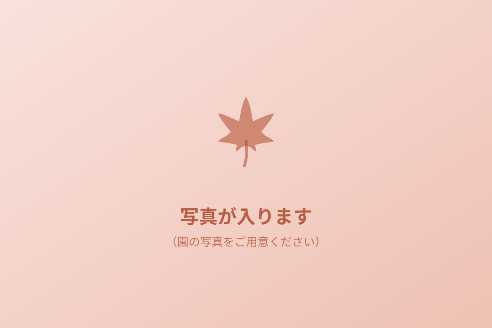
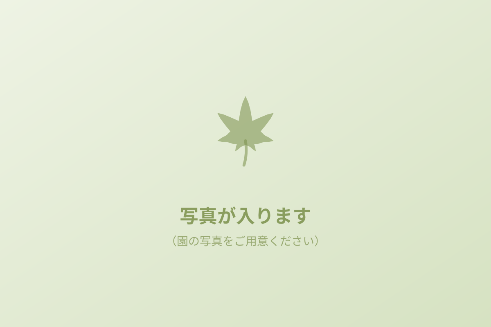
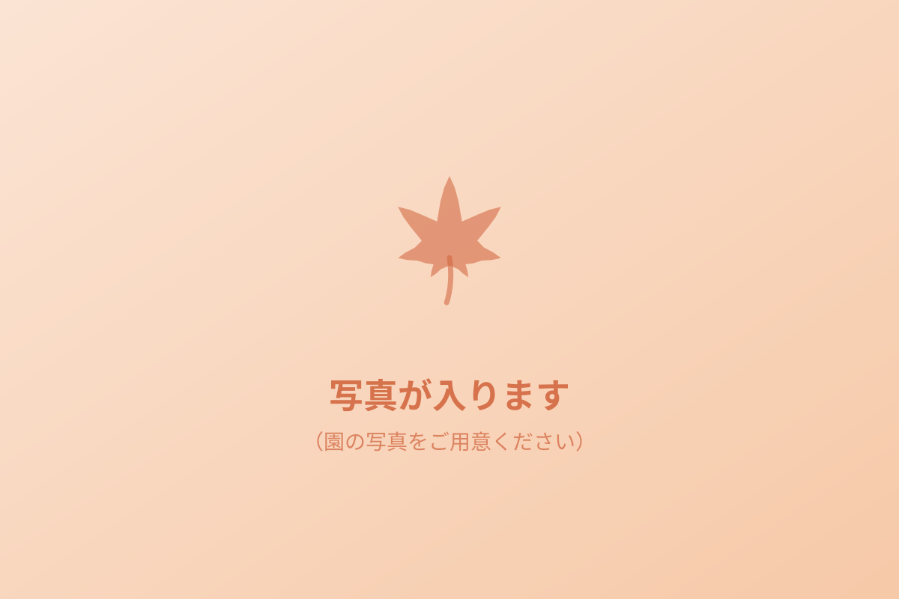
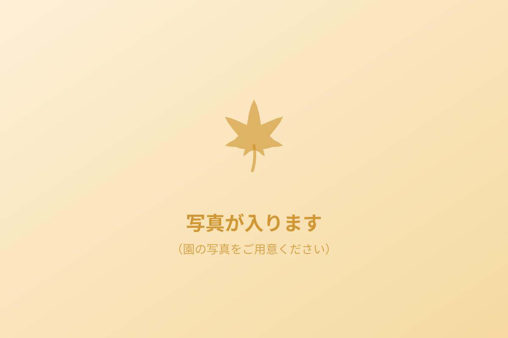

保育時間は、さいたま市で決まる「保育標準時間」か「保育短時間」かによって変わります。お仕事の都合に合わせて、延長保育もご利用いただけます。
7:15〜18:15。延長保育は19:15まで。
8:15〜16:15。延長保育は朝7:15から、夕方は19:15まで。
7:15〜18:15。土曜日の延長保育はありません。
ふだんの保育時間延長保育
0・1・2歳の子どもたちが、無理のないリズムで過ごせるようにしています。


見学やご入園のこと、空き状況のことなど、お気軽にお問い合わせください。
保育時間：月〜土 7:15〜18:15（延長は19:15まで） 日曜・祝日・年末年始はお休み